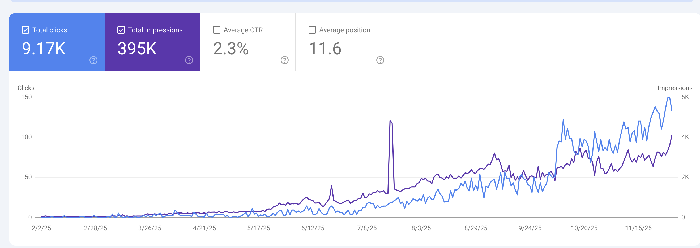

No search foundation
There were no rankings, authority signals, or indexed service pages to improve at launch.
A website rebuild and SEO foundation for a new multi-service freight and logistics company—turning zero search presence into 9.17K organic clicks in nine months.

The company launched in February 2025 with freight brokerage, customs brokerage, and internal or fleet shipping under one roof. Freight Labs built the website and SEO foundation alongside the launch so each buyer could find the right service and the business could develop an inbound channel beyond referrals and cold outreach.
The company had no existing domain authority or indexed content. At the same time, its three core services could not share one generic story: shippers, importers, and fleet-shipping buyers each search differently and need different proof before they engage.
There were no rankings, authority signals, or indexed service pages to improve at launch.
Capacity and rates matter to brokerage buyers; customs buyers need compliance and documentation confidence.
The site needed to communicate one accountable partner while giving each service a focused buyer journey.
We built dedicated pages for freight brokerage, customs brokerage, and internal or fleet shipping instead of compressing them into one services page.
Each service page addressed the information its buyers need—capacity, compliance credentials, tracking, service areas, and documentation.
Clean page structure, internal linking, schema markup, and site performance gave search engines a clear, crawlable foundation.
We focused the work on the freight, brokerage, and customs searches most likely to support the company’s target services and markets.
Research centered on real commercial freight, brokerage, and customs behavior—not broad transportation terms with little buying intent.
Every core service page was optimized around the questions and proof that mattered to its specific audience segment.
Long-tail, high-intent content expanded search coverage month over month rather than relying on a one-time launch push.
Organic clicks in nine months
Between February and November 2025, the company built meaningful organic visibility against established freight competitors. The early months were appropriately quiet while the domain and content foundation gained trust; impressions began climbing in June, and clicks compounded through October and November.
Total organic impressions
Average organic CTR
Average search position
Tell us which logistics services and markets you want to grow. We’ll help you choose the clearest path into search.
Book a Discovery Call